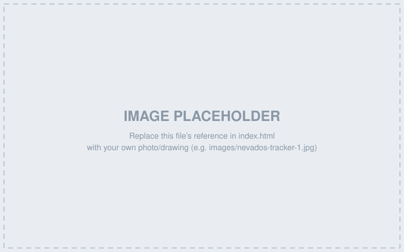

A collection of projects spanning solar tracker system design, vendor and
manufacturing management, and structural engineering — from steel design
to seismic anchorage and construction administration.
Nevados
Nevados
Design and System Architecture of a Single Axis Solar Tracker
Describe the problem and your role: what the tracker system needed to do,
the constraints (structural loads, terrain, cost targets), and your
responsibility within the overall system architecture.

Describe the design process, key decisions/trade-offs, tools used (e.g.
FEA, structural calcs, CAD), and the outcome or impact of the work.
Nevados
Vendor Onboarding, Management, and Coordination
Describe the scope: how many vendors, what components/services they
supplied, and what your role was in bringing them online.
Describe how you managed the relationship over time — qualification,
communication cadence, issue resolution — and the result for the
program (cost, schedule, quality).
Nevados
Manufacturing Drawings, Supplier Visits, and Quality Inspections
Describe your involvement in producing manufacturing-ready drawings and
how they connected to supplier capabilities.
Describe supplier visits and quality inspection process — what you
checked for, issues found and resolved, and the impact on part quality
or program timeline.
Degenkolb
Degenkolb
UCDH Hospital Tower Steel Design
Describe the project: building type/size, your role on the structural
team, and the codes/standards governing the design.
Describe key design challenges (e.g. lateral system, OSHPD requirements)
and how you addressed them.
Degenkolb
Seismic Equipment Anchorage
Designed and analized seismic anchorage for MEP, HVAC, medical, and other equipment in existing or new buildings, ensuring compliance with State and Building Codes.
Reviewed data sheets to determine equipment weight, center of gravity, and recommended anchorage locations. Used expansion anchors from HILTI or Simpson Strong-Tie, or directly thru-bolted in the slab.
Created detail drawings for each piece of equipment, showing anchor type, size, and location. Reviewed submittals and shop drawings to ensure compliance with design intent.